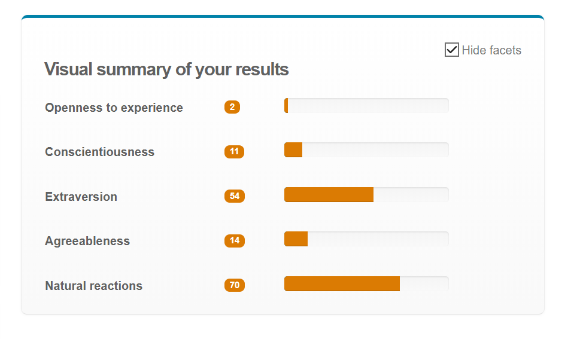
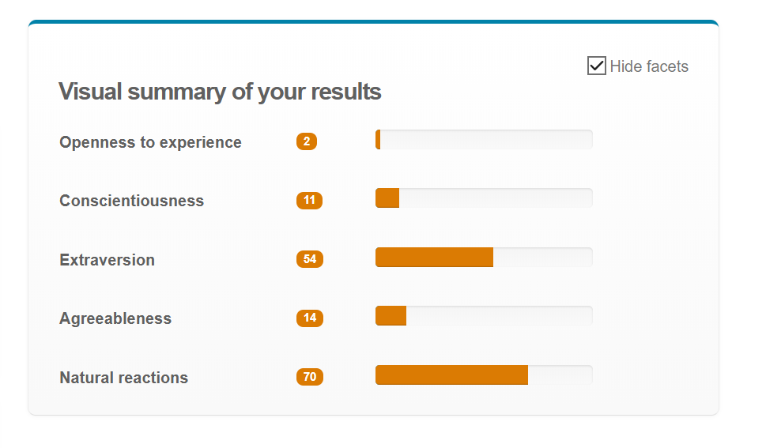

Hello, World!
My name is Austin, I am 19 years of Age and currently studying a Bachelor of Information Technology to broaden my understanding and add additional documentation to extend my resume, in hopes of expanding my career beyond Desktop Support. I chose RMIT as i see it as a much more reputable university than VU, which i had to move on from as i was offered this permanent position at Western Health and they had no IT related courses that i could take at night or in my spare time Online. I hope in my time in this course i have the ability to learn many Database related systems and that i can expand this into using it in the real world in the workforce.
I am currently working full time at Western Health in the IT/Digital Technology Services Department. I currently work as Desktop support on the Service Desk and at times work on Floor support. I have completed a Certificate III in Digital Communication and Media which was part of a Traineeship program that involved me working under a 1 year Contract in Western Health, this later grew to a Permanent job. Prior to this, I had worked in my high schools I.T department to assist with workstations and laptops that have had issues with them. This was part of a program my Information technology teacher offered me as part of extending the learning curve to the students in hopes to entice them into IT, which in my case worked as planned.
My Ideal career within I.T would have to be a server/database surrounded job. Databases have always caught my eye as they have to be intricate but still mapped out neatly and efficiently enough that future/current coworkers can understand. It’s also becoming more and more relied on as systems globally move to cloud based which while difficult is something that I am willing to challenge myself with. Within my current career which exceeded my personal expectations at my age, I have been able to expose myself with Clinical based applications that have databases such as Western Health’s new Electronic Medical records and also the now out of use Bossnet Digital Medical Records. While my experience has been limited with these systems, it is something that has caught my eye.
https://westernhealth.mercury.com.au/ViewPosition.aspx?id=5K3wZW73KLc=&jbc=ere
This job is somewhat similar to an ideal career/job I want to achieve. Being Internal to my current workplace, this provided a fantastic insight into what is required to be qualified to achieve this job. While it doesn’t highlight exact tertiary educations as this can be very broad (such as a bachelor of information technology) it does require Extensive knowledge in the essentials part of the Position description (.pdf file that is viewable in the weblink). These consist of SQL server knowledge and competencies, XML and also .NET framework knowledge.
In terms of non-Technical essentials, it does require effective and efficient communication to all levels of technology understanding. This is something I personally believe is something I have a Forte to, as this was an essential to me applying for a Service Desk agent position at Western Health.
Currently my skills are shared very well in the desirable category of this Position Description, I have extensive knowledge of ITSM tools, and have experience in IT delivery of new systems, as I was involved heavily in the rollout of the Electronic Medical Records (EMR) system currently operating in a successful functional state across Western Health.
A lot of these requirements are less to do with a Bachelors degree or something done in a broad degree itself, many of these require extra certifications that can be funded personally or can be funded by my workplace in an attempt to give me more exposure to apply to my current workplace, as an additional hand at any complex system may provide a better operational environment. This not only involves Database administration but also Security Administration and Change management strategies.
 


A Personal project I would like to undertake that would make great strides in assisting both small and large business worldwide is creating a simple payroll service that can have attributes and modules added to it. Essentially this would create a service that can be used by both small businesses who only have staff working casual hours and at casual rates that wouldn’t require many modules to be set up or created. However this can also cater to Larger scaled Businesses that require more modules to be set up such as shift work, On-call staff, meal plans. My motivation behind this project is that Western Health runs on a payroll system called Rosteron, which was developed my Melbourne Health and due to it’s age has less and less support supplied to it. This system also is painful to use by management, and my CTO has openly told me many times the intricacies of using it for new staff, and any Overtime that has to be submitted how difficult it can get. My belief is that management should not spend this time on Payroll, but should spend it on more change management or project procedures as this is what their role is focused on. This program would have to be created to have a friendly GUI login system which would have to have hashed passwords and communicate with a database to ensure credentials are correct and to confirm what type of access the user has. Microsoft access can be used to create a Login form and create an Access Database with a Simple GUI asking for an Employee number given to them upon employment by their manager, as well as a password. From here, Timesheet and payroll management can be split into two ways. Businesses can elect to choose the employee to fill in their own timesheets which is then sent to the manager for approval or rejection, as well as a comment section stating a rejection. Or the alternate is the Manager submits a time sheet that can be set as macros to aid in the efficiency of the product. (ie: pressing a button that auto-fills a single user for mon-fri 9:00am start to 5:00pm finish) From here, a feature that can be implemented is a payslip being auto generated, including any income tax removed from the Gross pay. This can either be accessed via the software in a “payslip” tab, and can be e-mailed to the employees personal email of their choice that can be altered in the settings and personal preferences tab. An important part of payroll systems is their system security as this involves personal pay wages. A feature as part of the stock “barebones” program is that a user is required to reset their password every 4 months and ensures that it fulfils the following requirements and restrictions: • Password must be longer than 8 characters • Must contain one (1) capital Letter • Must contain one (1) number • Cannot have the employees name in the password (Anetta123) • Cannot be a password used in the past 12 months. This provides the business with a sense of security that ensures that their password are not only kept secure, but also increasingly difficult to decrypt. Another addition to this payroll system would be a “how to” page. Many employees of this system may not be tech savvy. So a smart feature to allow employees to learn and become more confident with the system is capable of doing and what their tasks are required as this cannot be all done automatically. While moving to the digital age has proved to create businesses to be more effective and efficient, many Employees face many setbacks to adjusting to the new digital technologies. While adding an additional how to page will assist with this, it limits us to what other security measures we can do. One measure that could be considered as a module is a “timeout” feature where if a user has no activity in a certain amount of time while they have left themselves logged in, the system would terminate their session to the database and require them to relog, prompting a login screen that would appear on top of the main screen and black out any personal information that may be visible on the screen. There is also another limitation that certain workplaces have a majority of their workplaces that have a demographic of having a language other than English as their first language. This would cause some communication barrier issues. For example, Western Health employ 1600 nurses, in which a large percentage of them are born in the South East Asian area. While migrating to the country and bringing their skills across is fantastic, their English skills will not be as accurate as someone born and raised here in an education system based around English. Additional language modules can be purchased and selected in the settings and preferences pages, however a drawback that can be faced is while it can create a better environment for those employees who are not 100% confident in English, the language barrier with the altered module language can be difficult to read as it may not be entirely accurate. To run this software, any computer system that is running windows 10 or Mac OSX Yosemite would be required and would also require at least 4gb of ram and adequate Hard disk space (SSD recommended). It would also require a network connection to connect to the Database server that is being hosted at the Business so it can communicate with the login and payroll database. It would not be incredibly taxing to run this system on any PC, as it would have a very minimalist barebones program, however additional modules requested by the business may make it a slightly bulkier program to load and run on the users end. The Projected outcome of this program is that it will have an effect on many businesses being able to track their finances being allocated to the correct users in a more efficient manner, it will also be able to increase productivity in all other areas of management as less time is involved in pay/timesheet procedures.